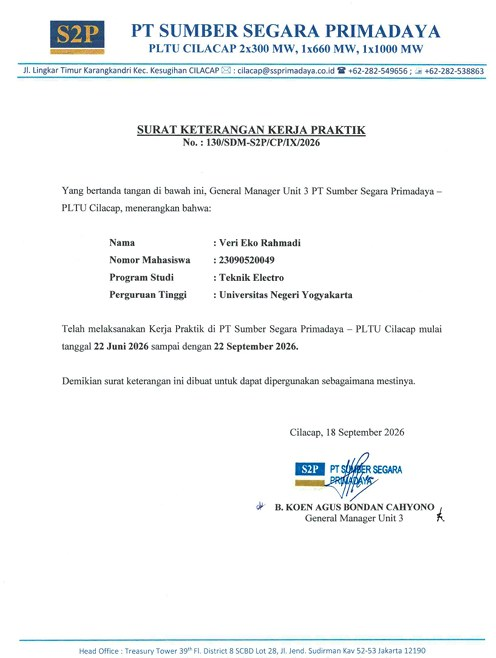
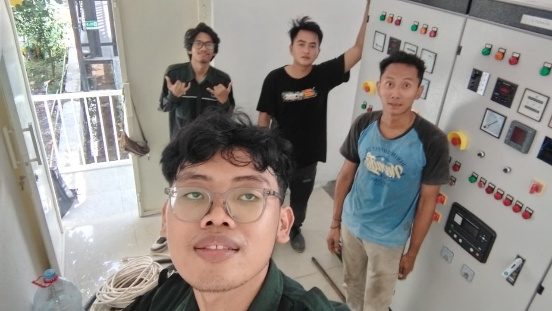
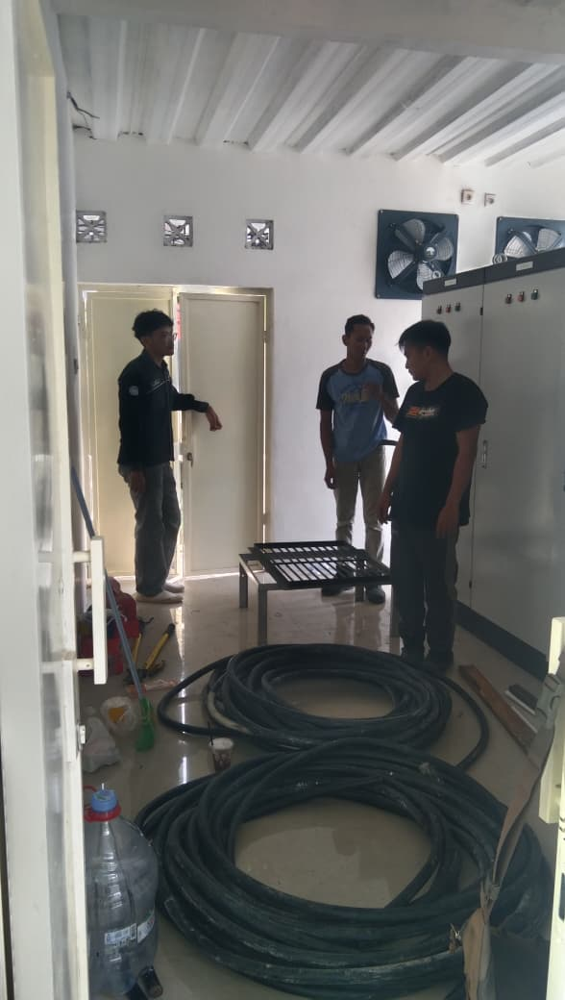
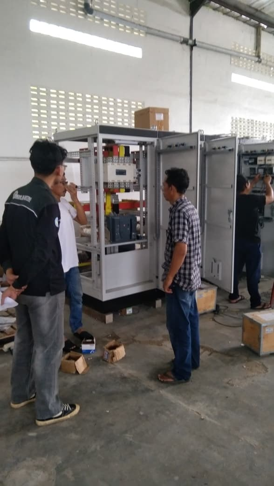
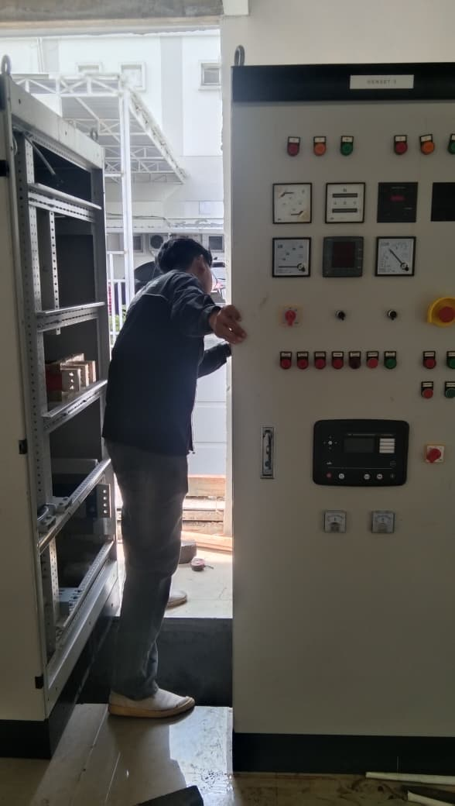
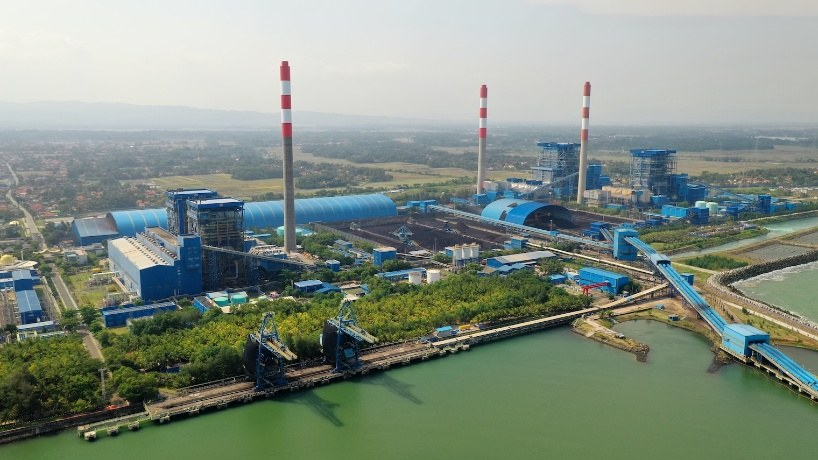
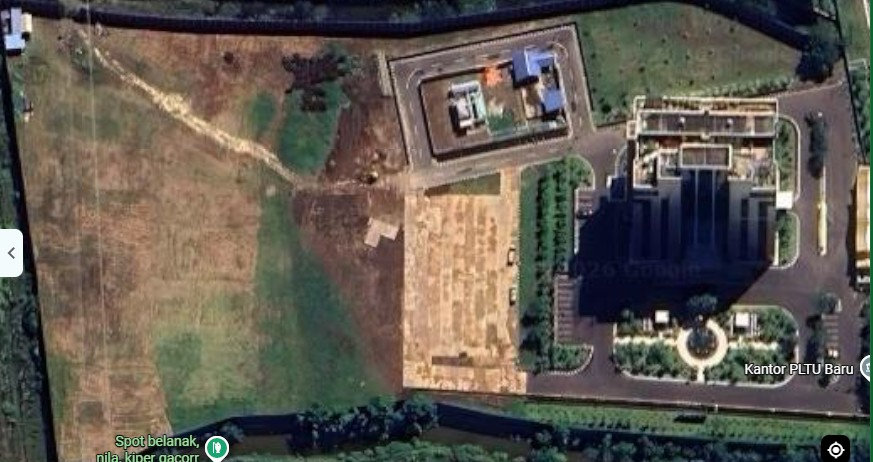
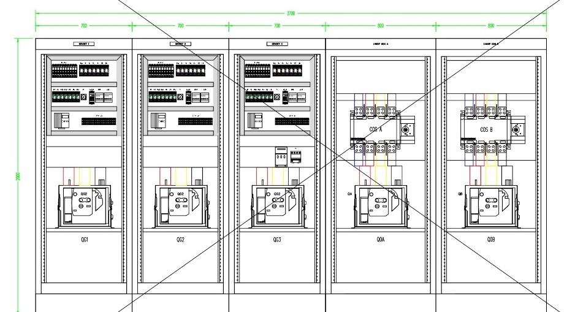
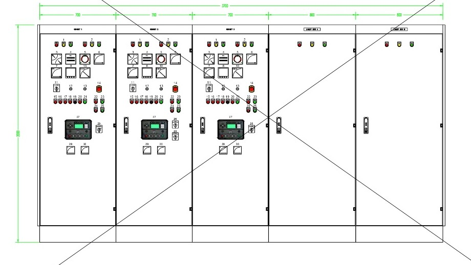

An Applied Electrical Engineering student in the seventh semester with a strong interest in Power Systems, Control and Instrumentation, and Renewable Energy. Skilled in using engineering software such as ETAP, AutoCAD, MATLAB Simulink, and PVsyst for system analysis, design, and simulation. Experienced in projects involving PLC automation, MEP analysis, solar power system simulation, DC–DC converter design, and power system studies.
Education
Applied Bachelor's Degree, Electrical Engineering
Universitas Negeri Yogyakarta, Kulon Progo, DI Yogyakarta
Key Responsibilities: Designed a 2.1 MW on-grid ground-mounted solar PV system for S2P Tower, interconnected to a 6.3 kV medium-voltage busbar under a self-consumption / zero-export scheme. Ran PVsyst energy yield simulation, ETAP load flow analysis, and an economic feasibility study (LCOE, NPV, payback period). Assisted in preparing electrical maintenance schedules and coordinating schedules for electrical equipment.
Value / Impact: Delivered a techno-economic design with an 86.7% Performance Ratio and 18.96% Solar Fraction, supporting grid interconnection feasibility and reliable maintenance planning.
Certificate of Completion

Click to enlarge
CV. Global Technindo
Junior Technician Intern
April – May 2026




Key Responsibilities: Worked on the panel system for RS JIH Yogyakarta: design of a 1600A Change Over Switch (COS) panel and an analog synchronizing and protection system for the generator lines, panel assembly and component wiring from technical drawings, testing and quality control before installation, and support for on-site installation and commissioning.
Value / Impact: Panel designs with mechanical and electrical interlocks that stop the PLN and generator sources from connecting to the busbar at the same time, preventing back-feed, and with protection relays on every generator unit. Work followed safety and technical standards from drawing to commissioning.
Design and techno-economic analysis of a solar PV plant interconnected to a 6.3 kV medium-voltage busbar under a zero-export scheme. Covers PV module, string inverter, and array sizing, energy yield simulation, load flow, and economic feasibility.
PVsyst
ETAP
Load flow
LCOE / NPV
Payback period


Capacity
2.1 MW
Performance Ratio
86.7%
Solar Fraction
18.96%
CV. Global Technindo
Electrical Panel System, RS JIH Yogyakarta
Panel system for a hospital project, from design to site: a 1600A Change Over Switch (COS) panel with interlocks, an analog synchronizing and protection system for the generator lines, panel assembly and wiring from technical drawings, testing and quality control, then on-site installation and commissioning.
Panel design
Protection relays
Change Over Switch
Generator synchronizing
Testing & QC
Commissioning
Client
RS JIH Yogyakarta
Period
April – May 2026
Scope
Design to commissioning
RS JIH Yogyakarta: design highlights

Design 1
Change Over Switch (COS) Panel 1600A
Switches the power source between the generator set and the PLN / transformer supply.
Main COS 3P 1250A (Socomec 41AC3120) for manual or motorized operation.
Panel size H2000 × W800 × D800 mm.
Mechanical and electrical interlock keeps both sources from connecting to the distribution busbar together, preventing back-feed that can damage equipment and endanger people.
Socomec
Interlock
Source changeover

Design 2
Analog Synchronizing & Protection System
Extra protection layer on every generator unit using SEG and Schneider relays: Reverse Power (RW-N), Under/Overvoltage (RM35TF30), and Over Current (RM17JC00MW).
Analog metering per generator line: double voltmeter 0–400 V, double Hertz meter 45–55 Hz, zero voltmeter 0–800 VAC, kW meter, and COS Phi meter.
Synchron Check Relay SYNCHROMAX PID (Circutor), plus speed and voltage adjusters for generator fine-tuning.
Reverse power
Over/undervoltage
Overcurrent
Synchronizing
Design drawings are shown without the consultant title block.
PT. Sumber Segara Primadaya
Electrical Maintenance Scheduling
Organized planned maintenance activities as part of daily operations.
Coordinated schedules for electrical equipment to support reliable and efficient operations.
Maintenance planning
Coordination
Academic Projects
Control
PLC & HMI Simulation for Automatic Railway Crossing System
Designed and developed a railway crossing control system simulation using CX-Programmer (PLC) and CX-Designer (HMI).
Implemented an automatic gate opening–closing mechanism based on train detection using sensors and actuators.
Developed real-time process visualization through HMI to improve safety and traffic efficiency.
PLC
HMI
CX-Programmer
Control
Automatic Cooling System Design
Designed and implemented a microcontroller-based automatic cooling system.
Integrated temperature sensors, actuators, and control logic to maintain thermal stability with real-time monitoring.
Microcontroller
Sensors
Control logic
Power Electronics
Buck Type DC–DC Converter Design
Designed a Buck type DC–DC converter for efficient voltage regulation.
Performed component calculations (inductor, capacitor, MOSFET), circuit simulation, and output voltage ripple analysis.
Power electronics
Circuit simulation
Building Systems
MEP Analysis of PDAM Wates Building, Kulon Progo
Conducted Mechanical, Electrical, and Plumbing (MEP) system analysis for the PDAM Wates commercial building.
Evaluated electrical power installation, clean water distribution system, and design compliance with technical standards using DIALux evo.
MEP
DIALux evo
Renewable Energy
Solar Power System Simulation for a Two-Story Building with 20 kV Load
Performed simulation and calculation of solar photovoltaic system requirements for a two-story building with a 20 kV load.
Analyzed solar irradiation, solar panel capacity, battery sizing, and estimated energy savings using Visual Studio Code.
Solar PV
Battery sizing
Visual Studio Code
Power Systems
Transmission & Distribution System Analysis, Wonosobo Region
Analyzed the electrical power transmission and distribution system in the Wonosobo region using DIgSILENT PowerFactory.
Performed Load Flow, Short Circuit, and imbalance analysis, including evaluation of voltage drop, power losses, and network optimization recommendations.
DIgSILENT PowerFactory
Load flow
Short circuit
Organizational Experience
2023 – 2024
Muslim Student Association Baiturrahman
Faculty of Vocational
Entrepreneurship Division
2024
Ramadhan on Campus Program
Volunteer
Public Relations
2024
Eks-mild Faculty of Vocational
Staff
Security Division
2025
Ormawa x SDP BEM KM FV
Committee member
Logistics & Equipment Division
Achievements & Progress
Key Results: PV Feasibility Study, S2P Tower
Techno-economic study of a 2.1 MW ground-mounted on-grid PV plant (2,284 kWp DC / 2,200 kWac), completed during my Guided Industrial Practice at PT. Sumber Segara Primadaya. Every feasibility criterion was met.
86.70%Performance RatioCriterion: above 75%
3,488.7 MWhAnnual energy1,528 kWh/kWp per year
18.96%Solar Fractionof 18,396 MWh/year demand
Rp921/kWhLCOEbelow PLN tariff Rp1,233/kWh
Rp8.27 BNPV25 years, 12% discount rate
18.60%IRRabove the 12% discount rate
8.8 yearsDiscounted paybackcriterion: under 25 years
46.5%ROIon Rp17.79 B CAPEX
Project Progress
1
System Design
3,460 Longi 660 Wp modules, 10 Huawei string inverters, 6 sub-arrays, DC:AC ratio 1.04, connected to a 6.3 kV busbar under a self-consumption scheme.
2
Energy Simulation
PVsyst V8.0.6 yield simulation. Largest loss: panel temperature (−6.7%). Distribution across months is fairly even.
3
Economic Analysis
CAPEX Rp17.79 B and OPEX Rp850.6 M per year, evaluated with NPV, IRR, payback, LCOE and ROI over 25 years.
4
Conclusion
All 12 indicators meet their criteria, so the 2.1 MW plant is declared economically feasible.
Cumulative Discounted Profit
From −Rp17.79 B at year 0 to +Rp8.27 B at year 25.
Monthly Solar Energy to User
Highest in April (316 MWh), lowest in November (250 MWh).
Project Photos
PLTU Cilacap, PT. Sumber Segara PrimadayaCandidate PV site (about 1 ha) beside the new PLTU office. Satellite view: Google Maps
These figures are simulation-based estimates: no 3D shading model yet, synthetic weather data, fixed tariff and costs, and no sensitivity analysis. Field irradiance data and sensitivity analysis are planned next steps.
Career Timeline
2023 – Present
Applied Bachelor's, Electrical Engineering
Universitas Negeri Yogyakarta. Current GPA 3.43 / 4.00.
2023
Microsoft Office Certification
Word, Excel, PowerPoint, LPK DELTA.
Apr – May 2026
Junior Technician Intern, CV. Global Technindo
Designed a 1600A COS panel and a generator synchronizing and protection system, plus panel assembly, testing and commissioning for RS JIH Yogyakarta.
22 Jun – 22 Sep 2026
Guided Industrial Practice, PT. Sumber Segara Primadaya
Completed the 2.1 MW PV feasibility study and took part in daily maintenance and operations at PLTU Cilacap.
22 Sep 2026
BNSP Certificate of Competence
Electrical Maintenance Technician, Complex Industrial Electrical. Issued by LSP Logam dan Mesin Indonesia, valid 3 years.